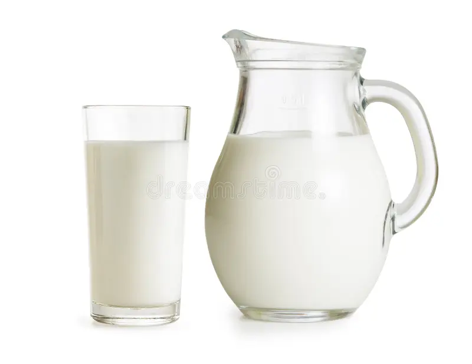

After a Game
In botany, a fruit is the seed-bearing structure in flowering plants that is formed from the ovary after flowering (see Fruit anatomy).
Fruits are the means by which flowering plants (also known as angiosperms) disseminate their seeds. Edible fruits in particular have long propagated using the movements of humans and other animals in a symbiotic relationship that is the means for seed dispersal for the one group and nutrition for the other; in fact, humans and many other animals have become dependent on fruits as a source of food.[1] Consequently, fruits account for a substantial fraction of the world's agricultural output, and some (such as the apple and the pomegranate) have acquired extensive cultural and symbolic meanings.
In common language usage, fruit normally means the seed-associated fleshy structures (or produce) of plants that typically are sweet or sour and edible in the raw state, such as apples, bananas, grapes, lemons, oranges, and strawberries. In botanical usage, the term fruit also includes many structures that are not commonly called 'fruits' in everyday language, such as nuts, bean pods, corn kernels, tomatoes, and wheat grains.[2][3]
A fruit results from the fertilizing and maturing of one or more flowers. The gynoecium, which contains the stigma-style-ovary system, is centered in the flower-head, and it forms all or part of the fruit.[9] Inside the ovary(ies) are one or more ovules. Here begins a complex sequence called double fertilization: a female gametophyte produces an egg cell for the purpose of fertilization.[10] (A female gametophyte is called a megagametophyte, and also called the embryo sac.) After double fertilization, the ovules will become seeds.
Ovules are fertilized in a process that starts with pollination, which is the movement of pollen from the stamens to the stigma-style-ovary system within the flower-head. After pollination, a pollen tube grows from the (deposited) pollen through the stigma down the style into the ovary to the ovule. Two sperm are transferred from the pollen to a megagametophyte. Within the megagametophyte, one sperm unites with the egg, forming a zygote, while the second sperm enters the central cell forming the endosperm mother cell, which completes the double fertilization process.[11][12] Later, the zygote will give rise to the embryo of the seed, and the endosperm mother cell will give rise to endosperm, a nutritive tissue used by the embryo.